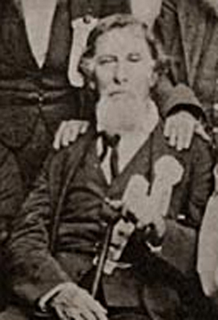
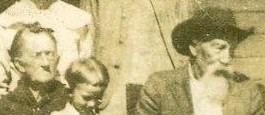

PHOTO ALBUM, CLARK LINE

James William "Buck" Clark, 1894
b. 1862 ?Feliciana, Graves Co KY d. 1940 near Bowie, TX.
Principal genetic ancestor, maternal great grandfather.
Southern thoroughbred descended from British gentry
on both father and mother (THOMAS, his strongly dominant bloodline) sides.
Direct paternal descendant of colonial Virginia planter Captain Christopher CLARK (b. ca 1681 VA, son of Micajah And Sallie Ann MOORMAN CLARK, gson of Michael & Margaret
(1679 Christ Church Parish Barbados, 167 acres 5 White Servants 78 Blacks, late 16oo's Barbados - "Clark men, gentlemen of nobility") CLARK) & Penelope Johnson?.
(Penelope Johnson vs Bolling?: the birthdate of Aug 4 1684, St Peter's Parish
New Kent Co Virginia, looks valid for Penelope as daughter of Edward (b. Aberdeenshire Scotland, probable descent from Johnston of Caskieben & Clan Johnstone of Annandale, Quaker links...) &
Eliz [Walker] Johnson. Capt Christopher CLARK & Penelope JOHNSON would probably have attended ca 1700 Black Creek Friends Meeting, St Peters Parish New Kent Co VA, together. "Immigrant [Col] Robt Bolling's (1646-1709) grandmother was Anne
Clarke, daughter of London merchant Thomas Clarke whose Clarke roots go back to
Yorkshire. That much is documented in the 1633-34 London Visitation journal.
That might be the connection that produced the "Bolling" name in the Christopher
Clark family. (I should add that this is the same Thomas Clarke, London
merchant, who shows up in the land records of widow Margaret Clarke of
Barbados)."

Samuel Clemens aka "Mark Twain"
Maternal ?double Cousin on Clark and Moorman (4th cousin 3x removed) lines.
Paternal 2nd great grandmother was Rachel, daughter of Captain Christopher Clark and Penelope ?Johnson.
Author of one of the greatest American novels, "Huckleberry Finn".

President Thomas Jefferson (1743-1826)
Micajah Clark (1718-1808), brother of ancester Bolling CLARK, was friend, neighbor (Clark's Tract in vicinity of Keswick just E of Monticello and Shadwell) and Surveyor for Thomas Jefferson. Micajah's son Bowling was friend (see correspondence of TJ), Attorney,
and Overseer for Jefferson at Monticello and Poplar Forest Plantations VA. Bowling was 1st cousin to maternal 4th g grandfather David CLARK (m. Charity BOONE, d. 1825 Weakley Co TN)...
"The Clarks and Jeffersons had known each other for decades, a relationship going back to Bowling’s grandfather Capt. Christopher Clark and Thomas’ father Peter Jefferson."

Meriwether Lewis (1774-1809)
Meriwether Lewis of Lewis & Clark was descended from Col Nicholas Meriwether (1665-1744), law partner & close associate of maternal 6th g
grandfather Captain Christopher CLARK (b. 1681 Somerton Nansemond Co VA d. 1754 Green Springs Louisa Co VA, ca 1698 St Peters Parish New Kent Co VA, tobacco planter, 1731 Hanover Co VA High
Sheriff, 13 negroes Aug 1744 Will) in colonial Virginia.

Governor James Clark (b. 1779 Bedford County, Virginia d. 1839 Frankfort, Kentucky)
Maternal 1st cousin 6x removed, 1836 Governor of Kentucky. His brother Christopher Henderson Clark (1767-1828, Attorney, studied law with Patrick Henry) was also associate of President Thomas Jefferson.
See TJ Correspondence: https://founders.archives.gov/search/Correspondent%3A%22Jefferson%2C%20Thomas%22%20Correspondent%3A%22Clark%2C%20Christopher%22
Descendants of Captain Christopher Clark and Penelope ?Johnson. House of Governor "Holly Rood" in Winchester KY still stands... As Kentucky Congressman,
he attended 1828 dinner at the White House with President John Quincy Adams & frontiersman Davy Crockett (Jan 3, 1829 letter Davy Crockett to James CLARK)...
Charles Lynch (b. 1783 Shelby Co KY d. 1853 Monticello Mississippi) was great grandson of Capt Christopher CLARK & Governor of Mississippi.

John Bullock Clark Sr (1802-1885)
Maternal 2nd cousin 5x removed, US Congressman b. Madison Co Kentucky, d. Fayette MO; 27 slaves Richmond Twp Howard Co MO 1860.
Descendant of Captain Christopher Clark & Penelope ?Johnson. During the Civil War, he served as Brigadier General in command of Missouri's
Confederate 3rd Division of Militia & led his troops at the July 5, 1861 Battle of Carthage. He also served as a Representative in the 2nd Confederate Congress in 1863.

General John Bullock Clark Jr (1831-1903)
Maternal 3rd cousin 4x removed, General CSA and Congressman of Fayette MO.
Descendant of Captain Christopher Clark and Penelope ?Johnson... Other CLARK Confederates: Captain Thomas Goode CLARK, Co F 42nd Mississippi Inf CSA
(b. 1815 Christian Co KY d. July 1 1863 Gettysburg PA); of Calhoun Co MS; 2nd cousin 4x removed, common ancestors Bolling & Winifred BUFORD CLARK; bro of Simeon BUFORD CLARK Jr
(1818-1899, 7 slaves Calhoun Co MS 1860); father of Jno & Albert Henry CLARK Co F 42nd Mississippi Inf CSA, died with him at Gettysburg. Son Isaac BUFORD CLARK (1847-1926), CSA vet,
survived the war... Also related: James Monroe POOL, 1st Kentucky Cavalry CSA 1861-65 (Perryville, Murfreesboro, Chickamauga, Atlanta...) of Princeton KY. He
was 1st cousin 4x removed, being the son of Dr. Timothy B. POOL (2 slaves 1860 Caldwell Co KY), brother of 3rd g gmother Jane POOL CLARK (b. NC ca 1803 d. Weakley Co TN 1895). Daughter of James M.
was Mary F. POOL CLARK who m. Micajah B. CLARK (1841- d. 1928 S of Dukedom Weakley Co TN, bro of 2nd g gfather Jno CLARK d. 1919 Bowie TX), son of 3rd g gfather Wm Bolling & Jane POOL CLARK of Weakley Co TN.

Governor Ratliff Boon (b. 1781 Franklin County, North Carolina d. 1844 Louisiana, Missouri)
Nephew of 4th g gmother Charity Boone Clark (m. David Clark, d. aft 1840 Graves Co KY). 2nd Governor of Indiana,
descendant of Thomas and Eliz Ratcliff Boon m. ca 1674, son of Nicholas BOON (m. Ann) b. ca 1615 Devon England.
These BOON's migration path appears to be mainly Devon England, Isle of Wight Co VA, Northampton/Hertford Co NC, etc...
2 DNA MATCHES to Ratliff BOONE antecedent in family of 4th g grandmother Charity BOONE.

Pat Boone
Singer. Maternal cousin through Charity Boone Clark who was ?2nd cousin once removed of his 3rd great grandfather Bryant Boone. Paternal great grandfather of Feliciana, Graves Co KY area.
Descendant of Thomas and Eliz Ratcliff Boon m. ca 1674.

Daniel Boone (1734-1820)
Kentucky frontiersman, distant maternal cousin through Charity BOONE Clark. Abundant DNA MATCHES to ancestors of Daniel BOONE,
especially
his father Squire BOONE (1696-1765, 15+ matches, m. Welsh Quaker Sarah Jarman Morgan).
?Possible BOONE common ancestor: father from N of Exeter, Devon England George BOONE I (ca 1571-1616) & his 2 sons George II (ancestor of Daniel BOONE pioneer) &
Nicholas BOONE (ancestor of Charity BOONE CLARK).
https://www.geni.com/people/Thomas-Boone-Sr/6000000008862140919 This family used noble Norman name of Bohun in 1500's?

Judge Andrew Richmond Boone
Judge of Mayfield KY, maternal cousin through Charity Boone Clark. 1861 secessionist leader.

Major G.W. Clanton, CSA
No relation, but interesting as a paternal 2nd great grandfather of Pat Boone,
1870 resident of Feliciana KY and Major of 8th/12th KY Cavalry CSA. Born Maury Co TN.

Narcissus BYRD Curtner
Maternal 2nd great grandmother, b. AL 1844 buried 1918 Chico, Wise Co Texas.
Mother-in-law of Buck Clark, & wife of Confederate veteran John Henry CURTNER (1835-1903), 23rd Texas Cavalry CSA (his grandfather Jacob Curtner 1830 Danville, Mercer
(now Boyle) Co KY, 1 slave). Relation to Byrds of Westover VA not proven.
Proven lineage by DNA test 2020 to 5th g grandfather
Richard BYRD, b. VA 1750 d. near Rogersville TN 1803, slave owning "Planter"; m. Elizabeth Woods Buster 1774 Fincastle VA,
Veteran of American Revolution and ?Lord Dunmore's War 1774 (Battle of Point Pleasant). Apparently Eliz BUSTER BYRD freed the slaves when the family
subsequently moved to Alabama just SE of Huntsville...
Maternal grandfather of Narcissus was Rev Jeremiah HORN (b.1794 near New Market, Jefferson Co TN - ?1867):
NW Georgia 1818 (near Spring Place, Cherokee Trader), 1834 Adair Co Oklahoma, moved Republic of Texas ca 1845 (Collin Co)...
American Revolution Pension of 5th g grandfather Jeremiah HORN (b. Orange (Guilford?) Co NC 1755 d. Carroll Co TN 1834, son of Quaker Nathaniel HORN): Served under Colonel John Bowman from Harrodsburg KY and Bryan Station
ca 1778-9, and in campaign against Shawnee Indians north of the Ohio, Battle of Chillicothe (May 1779) on Miami River.
https://revwarapps.org/w3555.pdf, https://en.wikipedia.org/wiki/Battle_of_Chillicothe. Pension to 2nd wife Mary Quarles of Purdy, McNairy Co TN...
Could be cousin to Jeremiah HORN of Boonesboro KY?
Sister of Narcissus BYRD Curtner, Melissa Jane BYRD (1842-1923), m. James Reed Spradley (b. 1832 Dekalb Co TN d. 1919 Collin Co TX) of Co C Martin's Regiment, Texas Cavalry (5th Partisan Rangers) CSA.
Unit Battles in Oklahoma: 1st battle of Cabin Creek July 1–2, 1863; Honey Springs July 17, 1863; 2nd Battle of Cabin Creek Sept 19, 1864; stationed at old
Fort Washita & Bokchito, Indian Territory... Sister of 2nd ggfather John Henry CURTNER (1835-1903), Helen Harriet CURTNER Cubertson (b. 1834 MO
d. 1921 Ft Worth TX), m. Elijah Culbertson (d. 1902 Kiowa OK), descended from Culbertson family of Cumberland Co PA & related to commanding officer of ?Samuel WILSON
(see GARRETT/WILCOX/WILSON page) killed 1756 in Battle of Sideling Hill, French & Indian War, Capt Alex Culbertson...

Riverside (Farnsley-Moremen Landing) Louisville, Kentucky
Plantation owned by maternal cousin Alanson MOORMAN (m. Rachel STITH, descendant of Col Robt BOLLING, Alanson's mother was also Eliz STITH and desc from Col Robt BOLLING (see James CLARK, above)) 1862. The MOORMANS and CLARKS
came to America together 1669 and were intermarried. Moorman family also had Glenn Fount Plantation just east of Brandenburg KY (Alanson, 29 Slaves 1850).

Charles Watt Moorman (b. ca 1817 Huntsville AL, buried 1850 SW of Carthage, Panola Co Texas)
CLARK/MOORMAN double cousin, a leader in the Regulator-Moderator War ca 1839-1844 of East Texas.
https://www.tshaonline.org/handbook/entries/moorman-charles-watt
"Watt could shoot straighter than any man I ever saw. He was a good scholar, wrote poetry that was real funny, & he had a comical laugh...
Moorman was usually armed with a Bowie knife and a pair of pistols. He carried a heavy stick to cane his minor enemies..."

Capt Claudius Buster (b. 1816 near Somerset KY d. 1889 Brenham Texas)
Triply related. "The famous Capt. BUSTER" came to Texas with his parents in 1836, was Captain in Mier Expedition 1842... Also Captain Co C 20th Reg, Texas Inf (Elmore's) CSA.
32 slaves 1860 Washington Co TX.
http://thebusterclan.blogspot.com/2016/05/remembering-capt-claudius-buster.html
He married Sarah Harris GARRETT, daughter of Hosea Garrett (b. 1800, 1st cousin of 4th g gfather Nicholas GARRETT).
His grandfather William Woods Buster (son of Wm John Buster 1729-95 & Jane WOODS 1735-1812) was brother of 5th g gmother Eliz WOODS Buster Byrd (WOODS lines British gentry) who m. ancestor Richard BYRD ("planter", d. 1803 Hawkins Co TN).
His paternal grandmother was Mary BYRD Buster, sister of the same Richard Byrd, "planter" d. 1803...

Micajah Brown Clark (1841-1928) & Mary F. Pool Clark (1846-1927) of N Weakley Co Tennessee
Micajah was younger brother of 2nd g gfather Jno CLARK (1831-d. 1919 Bowie TX). Mary F. POOL CLARK was daughter of Kentucky CSA vet James Monroe
POOL, nephew of 3rd g gmother Jane POOL CLARK.